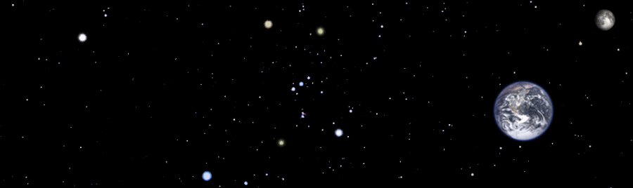
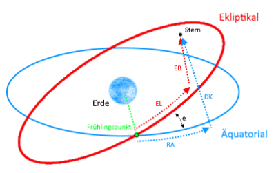
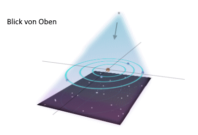
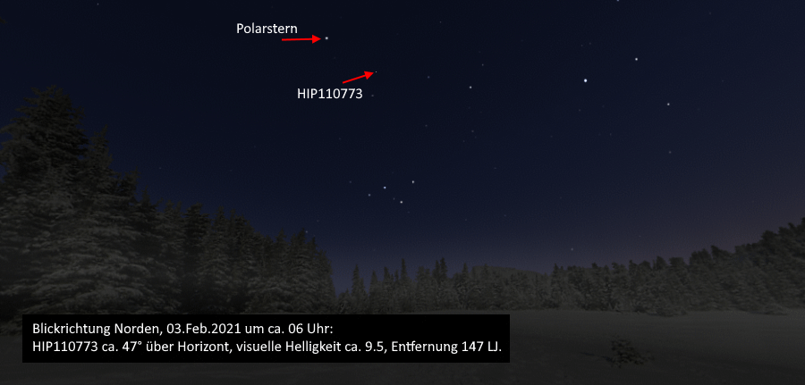

Dies ist eine Testseite von T.R.Kofler
Die Himmelskoordinaten:

|
 |
Erde: Unser blauer Planet hat einen Durchmesser von 12756 km. Die ihn umgebende Himmelskugel wird mittels zweier Koordinatennetze eingeteilt: Ekliptikal und Äquatorial - Die ekliptischen Koordinaten berücksichtigen die Neigung der Ekliptikebene von ca. 23 Grad (siehe auch: Wikipedia). Wärend das äuqatoriale Gradnetz sich auf die Ebene des irdischen Äquators bezieht. |
|
 |
Die Umlaufbahn: Beschreibung der Umlaufbahn bla bla bla ... |
Noch ein seltsamer Planet:

Sehen wir uns mal ein kurzes Video an:
Video mit freundlicher Genemigung von KEW.
Zum Anfang der Seite↑
... und ENDE - Das wars dann mal für's Erste.